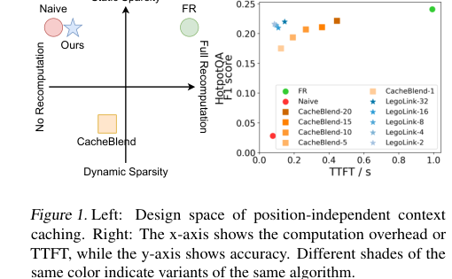
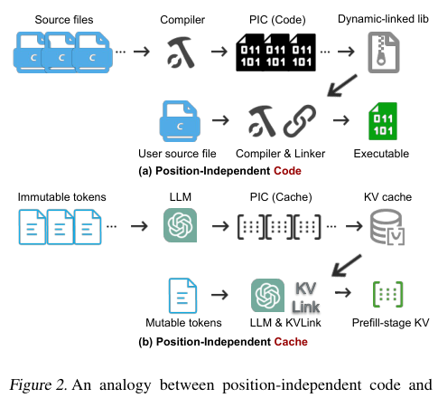
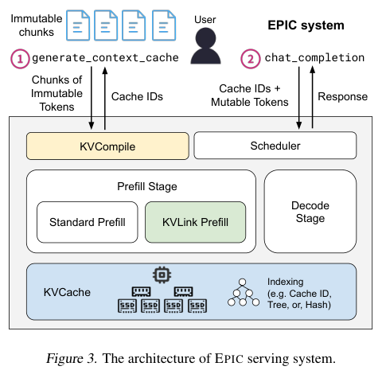
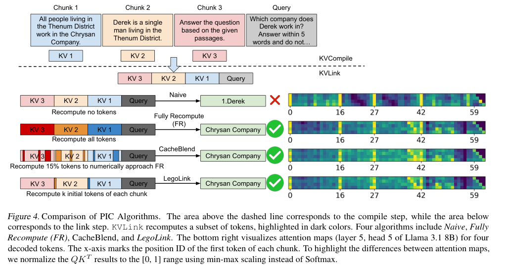
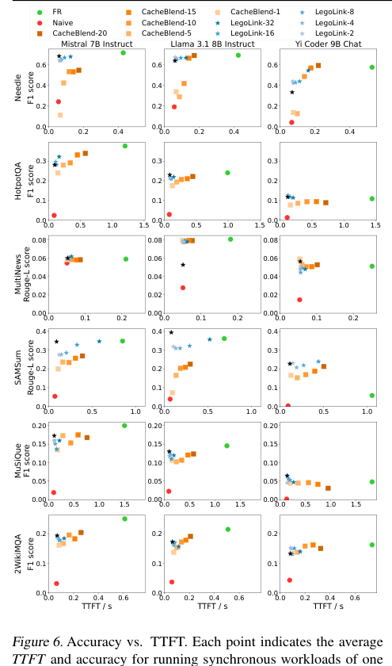
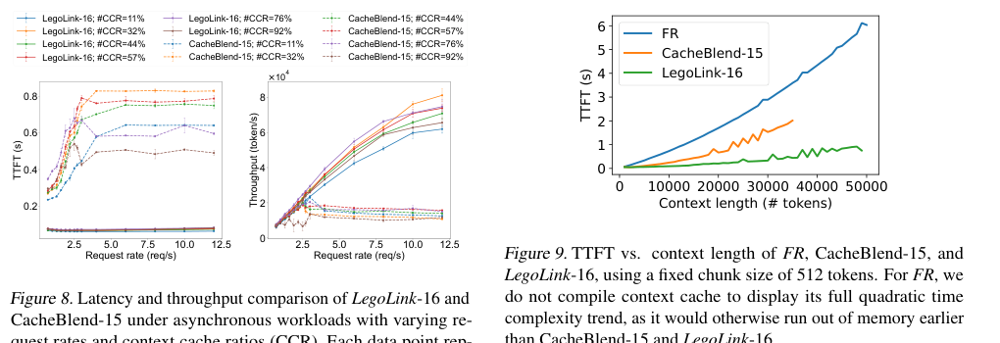

EPIC：面向 LLM Serving 的 Position-Independent Caching 中文翻译稿
摘要。EPIC 解决的是“可复用内容不一定是 prefix”的 context caching 问题。传统 prefix caching 只能复用当前请求和历史请求的最长公共前缀；但 RAG、few-shot learning 和多文档问答中，不变的文档块可能出现在不同位置、前面有不同用户指令。EPIC 提出 Position-Independent Caching，简称 PIC，把不可变 token chunk 的 KV 编译成可独立复用的 cache，然后在新请求中通过 KVLink 重新链接。论文提出 LegoLink 算法，只重算每个 chunk 的少量初始 tokens 来消除 attention sink 造成的准确率损失。实验显示，EPIC 在 TTFT 上最高提升 8 倍，throughput 最高提升 7 倍，同时准确率损失很小。
1 背景与问题
Context caching 的目标是避免重复 prefill。现有系统大多使用 prefix-based cache：如果新请求与旧请求共享前缀，就复用对应 KV。这个策略对固定 system prompt 有效，但对 RAG 和多文档 QA 不够。文档块本身不变，但用户 query、指令和排序可能变化，导致它们不再处于相同前缀位置。
EPIC 借鉴 position-independent code 的思想：编译出的代码可以在任意内存地址执行，PIC 则希望编译出的 KV cache 可以在任意 prompt 位置复用。挑战是 Transformer attention 与位置编码相关，直接拼接不同位置生成的 KV 会破坏 attention 机制。

2 PIC 抽象
EPIC 将 PIC 分为两个阶段。第一是 compile step：用户提交不可变 chunks，系统执行标准 prefill，生成各 chunk 的 KV，并分配 cache ID。每个 chunk 的位置 ID 从 0 开始，因此可以独立存放。第二是 link step：用户提交包含可变 query 和 cache IDs 的请求，系统取回相关 KV，再对一小部分 tokens 重算，形成可用于当前 prompt 的 prefill-stage KV。

3 EPIC 系统
EPIC 系统提供两个 API：generate_context_cache 和 chat_completion。前者把 immutable chunks 编译成 cache IDs；后者接受 cache IDs 与 mutable tokens，调度 KVLink prefill 和 decode。EPIC 采用显式 caching，让用户或应用层决定哪些内容应缓存，而不是仅靠 engine 内部 hash/radix tree 自动发现。

显式 caching 的优势是控制力强，尤其适合 RAG：检索器知道哪些文档块会被重复使用，应用也知道哪些内容不可变。代价是 API 和应用逻辑更复杂，需要用户或上层框架管理 cache IDs。
4 LegoLink 算法
直接复用 PIC KV 的 naive 方法会失败。原因是每个 chunk 在 compile 时都从位置 0 开始，初始 tokens 会产生强 attention sink，link 后这些 token 仍吸引过多 attention。Fully Recompute 准确但慢，CacheBlend 通过选择一部分 tokens 重算改善质量但复杂度较高。
LegoLink 的观察是：只需要重算每个 chunk 的前 k 个 tokens，就能让它们意识到自己在当前 prompt 中不是开头，从而显著缓解 attention sink。若 k 很小，重算复杂度接近 O(kN) 而不是 O(N2)。LegoLink-0 甚至把 dummy beginning tokens 在 compile 时加入、link 时丢弃，进一步减少链接时开销。

5 实验结果
论文在 Needle、HotpotQA、MultiNews、SAMSum、MuSiQue、2WikiMQA 等数据集上比较 FR、Naive、CacheBlend 和 LegoLink，并使用 Mistral 7B、Llama 3.1 8B、Yi Coder 9B 等模型。指标主要是准确率与 TTFT。
实验显示，LegoLink 系列形成新的 Pareto frontier。LegoLink-2 通常足以限制准确率下降到 7% 以内，同时相对 CacheBlend-15 最高降低约 300% TTFT。随着重算 tokens 增加，LegoLink 的准确率边际收益递减，说明最关键的是处理每个 chunk 开头的 attention sink。


6 局限与选题启发
EPIC 关注不可变 chunks 的跨位置复用，不直接处理 agent workflow 的调度、branch 或 cache eviction。它假设应用能识别 immutable chunks，并愿意显式管理 cache IDs。对于高度动态、持续生成和修改的 agent state，PIC 需要额外机制判断哪些状态可编译、何时失效。
对本仓库方向的意义。EPIC 是“非前缀 KV 复用”的重要参考。若暑期选题围绕 agent memory 或 RAG workflow，PIC 可以支撑一个问题：如何把工作流中的稳定知识块、system prompt、tool specification 或历史摘要编译成可重用 KV，并与 workflow scheduler 联合决定何时 link、何时重算少量 tokens。
参考说明
参考文献保留在原 PDF 中。本文译稿覆盖摘要、PIC 抽象、系统架构、LegoLink 算法、实验和对选题的启发。